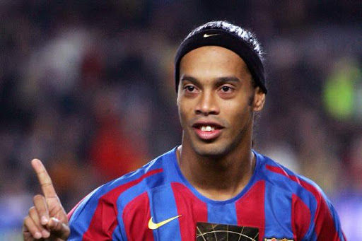

All time legends
|  Ronaldinjo Ronaldo de Assis Moreira (born 21 March 1980), commonly known as Ronaldinho (Brazilian Portuguese: [ʁonawˈdʒĩɲu]) or Ronaldinho Gaúcho, is a Brazilian professional footballer and current club ambassador for Spanish club FC Barcelona after signing for them in September 2016.His main playing position is as an attacking midfielder or forward. He won the FIFA World Player of the Year award in 2004 and 2005. Renowned for his technique, tricks, dribbling, overhead kicks, no-look passes and free kicks, Ronaldinho is regarded to be one of the best players of his generation |
|---|
Deco Anderson Luís de Souza (born 27 August 1977), known as Deco, is a retired Brazilian born-Portuguese footballer who played as an attacking midfielder or central midfielder. Deco is one of the few players to have won the UEFA Champions League with two clubs – FC Porto in 2004 and FC Barcelona in 2006. He was named UEFA Club Footballer of the Year and UEFA Best Midfielder in Porto's Champions League-winning season and was named Man of the Match in the 2003–04 Champions League final. Deco was the first player to win the UEFA Best Midfielder Award with two clubs, Porto and Barcelona. He was awarded the 2006 FIFA Club World Cup Golden Ball and the Man of the Match award in the final despite losing to Internacional. |
Croyff Hendrik Johannes "Johan" Cruijff OON (Dutch: [ˈjoːɦɑn ˈkrœyf] ( listen), anglicised to Cruyff; 25 April 1947 – 24 March 2016) was a Dutch professional football player and coach. As a player, he won the Ballon d'Or three times, in 1971, 1973 and 1974. Cruyff was the most famous exponent of the football philosophy known as Total Football explored by Rinus Michels, and is widely regarded as one of the greatest players in football history. In the 1970s, Dutch football rose from near obscurity to become a powerhouse in the sport.Cruyff led the Netherlands to the final of the 1974 FIFA World Cup and received the Golden Ball as player of the tournament. At the 1974 finals he executed a feint that subsequently was named after him, the Cruyff Turn, a move widely replicated in the modern game. |